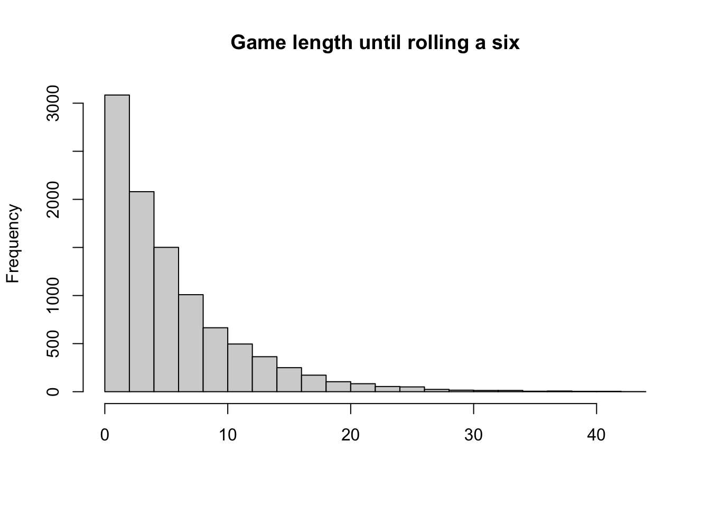

Show solution
for(i in 2:5){
print(i)
}[1] 2
[1] 3
[1] 4
[1] 5Homework 7
for(i in 2:5){
print(i)
}[1] 2
[1] 3
[1] 4
[1] 5for(i in 1:5){
print(c(1:i))
}[1] 1
[1] 1 2
[1] 1 2 3
[1] 1 2 3 4
[1] 1 2 3 4 5x=seq(from=-50,to=100,by=10)
mean(x)[1] 25for(i in 1:length(x)){
print(paste('Element',i,'in x is',x[i]))
}[1] "Element 1 in x is -50"
[1] "Element 2 in x is -40"
[1] "Element 3 in x is -30"
[1] "Element 4 in x is -20"
[1] "Element 5 in x is -10"
[1] "Element 6 in x is 0"
[1] "Element 7 in x is 10"
[1] "Element 8 in x is 20"
[1] "Element 9 in x is 30"
[1] "Element 10 in x is 40"
[1] "Element 11 in x is 50"
[1] "Element 12 in x is 60"
[1] "Element 13 in x is 70"
[1] "Element 14 in x is 80"
[1] "Element 15 in x is 90"
[1] "Element 16 in x is 100"for(i in 1:length(x)){
if(i == 1){
print(paste('The first element in x is',x[i]))
}
else if(i == length(x)){
print(paste('The last element in x is',x[i]))
}
else{
print(paste('Element',i,'in x is',x[i]))
}
}[1] "The first element in x is -50"
[1] "Element 2 in x is -40"
[1] "Element 3 in x is -30"
[1] "Element 4 in x is -20"
[1] "Element 5 in x is -10"
[1] "Element 6 in x is 0"
[1] "Element 7 in x is 10"
[1] "Element 8 in x is 20"
[1] "Element 9 in x is 30"
[1] "Element 10 in x is 40"
[1] "Element 11 in x is 50"
[1] "Element 12 in x is 60"
[1] "Element 13 in x is 70"
[1] "Element 14 in x is 80"
[1] "Element 15 in x is 90"
[1] "The last element in x is 100"for(i in 1:length(x)){
if(x[i] >= 0){
print(paste('The square root of',x[i],'is',sqrt(x[i])))
}
if(x[i] <0){
print(paste('Cannot calculate the square root of',x[i]))
}
}[1] "Cannot calculate the square root of -50"
[1] "Cannot calculate the square root of -40"
[1] "Cannot calculate the square root of -30"
[1] "Cannot calculate the square root of -20"
[1] "Cannot calculate the square root of -10"
[1] "The square root of 0 is 0"
[1] "The square root of 10 is 3.16227766016838"
[1] "The square root of 20 is 4.47213595499958"
[1] "The square root of 30 is 5.47722557505166"
[1] "The square root of 40 is 6.32455532033676"
[1] "The square root of 50 is 7.07106781186548"
[1] "The square root of 60 is 7.74596669241483"
[1] "The square root of 70 is 8.36660026534076"
[1] "The square root of 80 is 8.94427190999916"
[1] "The square root of 90 is 9.48683298050514"
[1] "The square root of 100 is 10"library(Lock5Data)
avg.protein=mean(Cereal$Protein)
for(i in 1:nrow(Cereal)){
if(Cereal$Protein[i] > avg.protein){
print(paste(Cereal$Name[i], 'contains more protein than the average.'))
}else{
print(paste(Cereal$Name[i], 'contains less protein than the average.'))
}
}[1] "AppleJacks contains less protein than the average."
[1] "Boo Berry contains less protein than the average."
[1] "Cap'n Crunch contains less protein than the average."
[1] "Cinnamon Toast Crunch contains more protein than the average."
[1] "Cocoa Blasts contains less protein than the average."
[1] "Cocoa Puffs contains less protein than the average."
[1] "Cookie Crisp contains less protein than the average."
[1] "Corn Flakes contains less protein than the average."
[1] "Corn Pops contains less protein than the average."
[1] "Crispix contains less protein than the average."
[1] "Crunchy Bran contains less protein than the average."
[1] "Froot Loops contains less protein than the average."
[1] "Frosted Mini-Wheats contains more protein than the average."
[1] "Golden Grahams contains more protein than the average."
[1] "Honey Nut Clusters contains more protein than the average."
[1] "Honey Nut Heaven contains more protein than the average."
[1] "King Vitaman contains less protein than the average."
[1] "Kix contains less protein than the average."
[1] "Life contains more protein than the average."
[1] "Lucky Charms contains less protein than the average."
[1] "Multi-Grain Cheerios contains less protein than the average."
[1] "Product 19 contains less protein than the average."
[1] "Raisin Bran contains more protein than the average."
[1] "Reese's Puffs contains more protein than the average."
[1] "Rice Chex contains less protein than the average."
[1] "Rice Krispie Treats contains less protein than the average."
[1] "Smart Start contains more protein than the average."
[1] "Special K contains more protein than the average."
[1] "Total contains more protein than the average."
[1] "Wheaties contains more protein than the average."library(Lock5Data)
library(tidyverse)── Attaching core tidyverse packages ──────────────────────── tidyverse 2.0.0 ──
✔ dplyr 1.2.1 ✔ readr 2.2.0
✔ forcats 1.0.1 ✔ stringr 1.6.0
✔ ggplot2 4.0.3 ✔ tibble 3.3.1
✔ lubridate 1.9.5 ✔ tidyr 1.3.2
✔ purrr 1.2.2
── Conflicts ────────────────────────────────────────── tidyverse_conflicts() ──
✖ dplyr::filter() masks stats::filter()
✖ dplyr::lag() masks stats::lag()
ℹ Use the conflicted package (<http://conflicted.r-lib.org/>) to force all conflicts to become errorsi=1
result=1
while(max(result) < 1000){
result[i]=sqrt(i)*(i+1)*10
i=i+1
}
result[1:5][1] 20.00000 42.42641 69.28203 100.00000 134.16408outcome=1
while(outcome != 6){
outcome=sample(c(1:6),size=1)
print(outcome)
}[1] 6outcome=1
counter=0
while(outcome != 6){
outcome=sample(c(1:6),size=1)
print(outcome)
counter = counter+1
print(paste("counnter",counter))
}[1] 4
[1] "counnter 1"
[1] 2
[1] "counnter 2"
[1] 6
[1] "counnter 3"result=rep(NA,10000)
for(i in 1:length(result)){
counter=0
outcome=1
while(outcome != 6){
outcome=sample(c(1:6),size=1)
#print(outcome)
counter=counter+1
if(counter >5000){
break
}
}
#print(counter)
result[i]=counter
}
summary(result) Min. 1st Qu. Median Mean 3rd Qu. Max.
1.00 2.00 4.00 6.03 8.00 44.00 mean(result>=10)[1] 0.1974mean(result==1)[1] 0.1677hist(result,nclass = 30,
main='Game length until rolling a six',
xlab=NA)